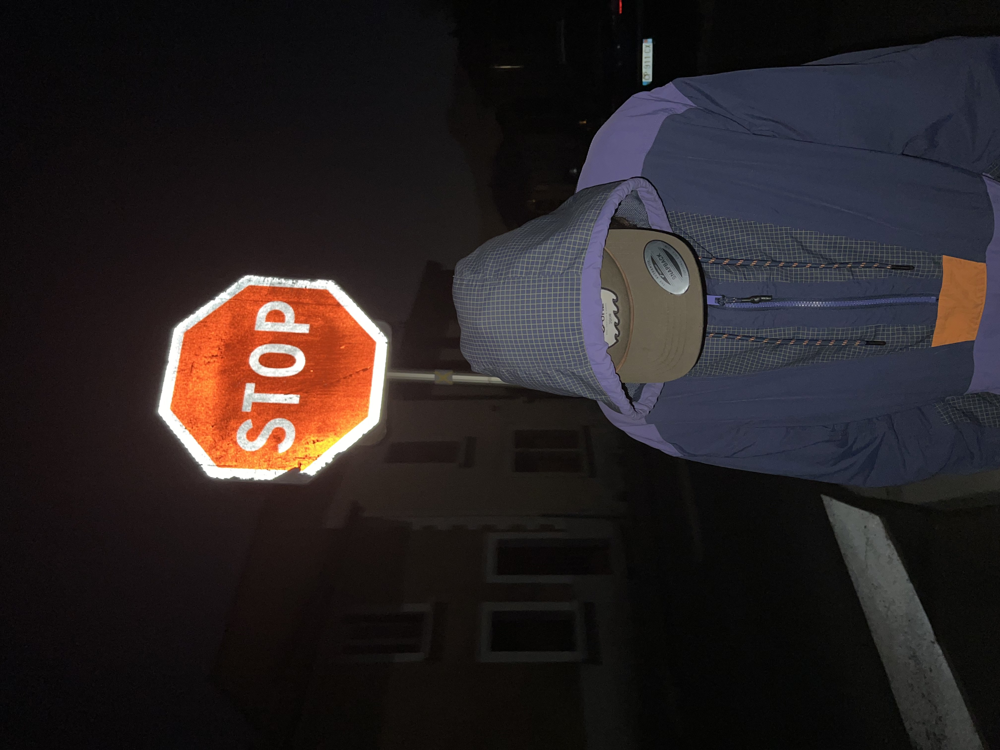
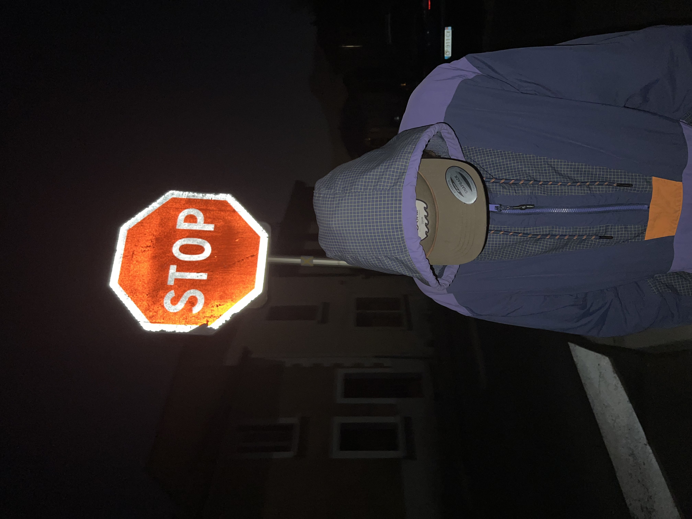

kalm's description
On this page you will learn a lot of informations about me. Just me, not on my works.

PROFILE
On this page you will learn a lot of informations about me. Just me, not on my works.
So I'm kalm, a 18 years old vagabond who likes to take pictures and travel. They are my passions. I'm looking for put a smile on people's faces everywhere I travel by creating art.

 

To start my little history, I'm going to tell you about my second and last year of high school, that's when I started to be interest in photography. That same year I bought an iPhone and I began to take photos with it, also, I began to learn HTML and CSS, I saw in it a continuity to photography and simply a way of making art. During the last year, I bought a camera and this is where I really started to learn photographie and art in general.